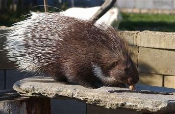
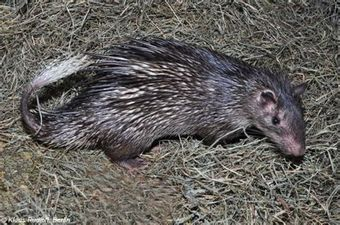

Obecné informace
Větší tělo, krátké nohy, střední nebo krátký ocas.
Jsou pro ně typické bodliny, nebo ostny pokrývající většinu jejich těla.
Jsou býložraví.
Obývají pouště, savany a některé lesy.
Většinou noční živočichové, před den v norách, jeskyních.
Zástupci
Dikobraz obecný
Osinák africký
Dikobraz obecný
Má typické ostny, na hlavě dlouhé štětiny.
Výskyt v rovníkové, severní Africe.
Žije i v Evropě – kolem středozemního moře.

Osinák africký
Vyskytuje se v tropické Africe.
Protáhlé, štíhlé tělo, krátké nohy, menší a lehčí ostny, zbytek těla štětiny, dlouhý a šupinatý ocas.
